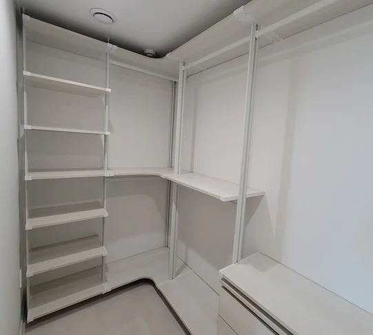

Making Process
드레스룸 제작
과정
실측 한 번이 설치 후 몇 년의 사용감을 정합니다.
드레스룸 제작에서 가장 중요한 단계는 실측입니다. 벽 길이와 천장 높이뿐 아니라 문이 어느 쪽으로 열리는지, 콘센트와 스위치가 어디 있는지, 창틀이 얼마나 튀어나와 있는지까지 확인해야 설치 후에 서랍이 문에 걸리거나 선반이 스위치를 가리는 일이 생기지 않습니다.
실측한 치수를 바탕으로 옷 구성에 맞춰 배치를 정하고, 정확한 견적을 드린 뒤 제작에 들어갑니다. 특히 ㄱ자처럼 코너가 있는 공간은 코너 연결 방식에 따라 수납량이 크게 달라져서 이 단계에서 꼼꼼히 정합니다.

Situations
실측 때 함께 확인하는 것
문 열림 방향
서랍과 행거가 문 여닫힘을 막지 않는 깊이와 위치를 정합니다.
콘센트·스위치
선반이 가리지 않도록 높이를 피하거나 칸을 비워 둡니다.
창문과 창틀
창을 열고 닫을 수 있게 창 아래 구성을 낮춥니다.
코너 구조
두 벽이 만나는 안쪽까지 쓰도록 코너 선반 연결을 정합니다.
Checklist
단계별로 고객님이 해 주실 일
| 단계 | 고객님 | 코니처 |
|---|---|---|
| 상담 | 방 사진, 원하는 구성 보내기 | 가능한 방향 대략 안내 |
| 실측 | 실측 날 공간 비워 두기 | 치수·재질·위치 확인 |
| 설계·견적 | 옷 구성, 색상 선택 | 배치 확정, 정확한 견적 |
| 제작 | 설치 날짜 확정 | 치수대로 자재 준비 |
| 설치 | 설치 공간 짐 정리 | 설치, 수평·고정 점검 |
Process
드레스룸 제작 5단계
문자 상담
사진과 원하는 선반 수, 행거 크기로 방향을 먼저 잡습니다.
실측 방문
벽·천장 치수와 재질, 문·창·콘센트 위치를 확인합니다.
설계·견적 확정
옷 구성과 색상을 정하고 실측 기준 견적을 드립니다.
제작
확정한 치수로 프레임, 선반, 부속을 준비합니다.
설치·점검
수평과 고정, 서랍·도어 움직임을 확인하고 마무리합니다.
FAQ
자주 묻는 질문
실측 전에 미리 재 둘 것이 있나요?
대략적인 벽 길이와 천장 높이를 알려주시면 상담이 빨라집니다. 정확한 치수는 실측 때 다시 잽니다.
실측 후 구성이 바뀔 수 있나요?
네. 실제 치수를 재 보면 선반 단수나 행거 길이를 조정해야 하는 경우가 있습니다. 바뀌는 부분은 견적과 함께 설명해 드립니다.
설치하는 날 집에 있어야 하나요?
설치 위치와 구성을 최종 확인해야 해서 시작할 때는 계셔 주시는 게 좋습니다.
설치 전에 옷을 다 빼야 하나요?
설치할 공간의 짐과 옷은 미리 비워 주셔야 작업이 원활합니다.
코너는 어떻게 처리하나요?
코너 선반으로 두 벽을 연결해 안쪽까지 쓰도록 하거나, 동선상 필요하면 코너를 비워 둡니다. 실측 때 함께 정합니다.